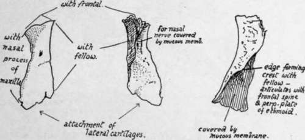
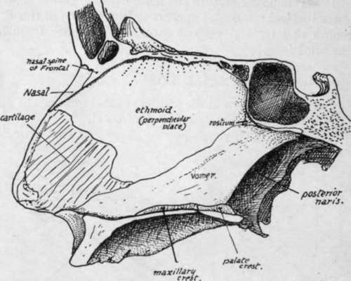
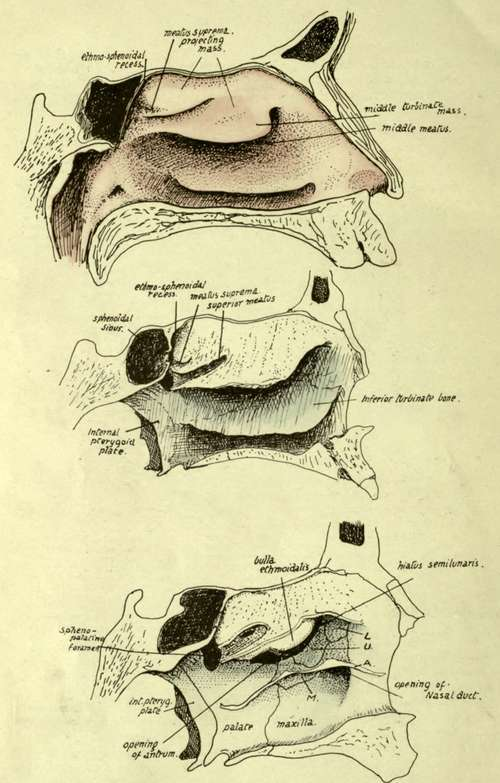

Nasal Bone
Description
This section is from the book "The Anatomy Of The Human Skeleton", by J. Ernest Frazer. Also available from Amazon: The anatomy of the human skeleton.
Nasal Bone
A small bone, meeting its fellow in the middle line and forming the upper and front part of the roof of the nose, immediately below the frontal.
Each nasal bone has a thick rough base or upper end that articulates with the frontal, a thick rough inner surface that meets its fellow, a thinner outer margin that is supported by the nasal process of the maxilla, and a thin irregular lower edge that slopes upwards and inwards, and to which the cartilaginous structures of the side of the nose are fastened. The front surface, slightly convex from side to side, and concave in its upper part from above down, presents a vascular foramen and is covered by Pyramid-alis nasi and skin : the deep or nasal surface, concave from side to side, is smooth and covered by mucous membrane, under which the nasal nerve runs down on the bone. The inner margin of this surface, where it meets its fellow, rests on the nasal spine of the frontal and on the perpendicular plate of the ethmoid in front of this (Fig. 193). If, as frequently occurs, this plate falls short of the lower margin of the bones, the septal cartilage articulates with the lower part of the median crest.
Fig. 192.-Right nasal bone, from the front, from behind, and from the inner side.
16-2
Development
From a centre in membrane showing toward the end of the second month on the surface of the nasal capsule. The nasal nerve is separated from it by the cartilage, which does not completely disappear until after birth. A small second centre is said to form its inner part in cartilage, the notch in the lower edge marking the junction between the two portions.
Nasal Foss.e.
The structure of the lateral masses of the ethmoid can be understood best, perhaps, by a short study of the nasal fossa, which can be undertaken now with advantage.
The Septum (Fig. 193) is easy of comprehension : observe how the whole of its upper part is made by the perpendicular plate of the ethmoid, how this rests below and behind on the vomer, and how it projects forward far beyond the level of the rest of the bone to articulate with the nasal spine of the frontal and to carry the nasal bones in front of this. The other bones that enter into the formation of the septum are-the frontal spine, resting on the vertical plate and the crest (not always apparent) made in front of this by the meeting of the nasal bones ; the crest, made by the two palate bones and two maxilla where they meet and support the vomer ; the rostrum of the sphenoid, fitting in between the ethmoid and vomer for a little distance. The remaining part of the septum is made by the septal cartilage, and on this he the vomerine cartilage (cartilage of Jacobson) and the in-turned front part of the cartilage of the aperture.
Fig. 193.-Nasal septum seen from the left side. The section is a little to the left of the middle line, so that the composition of the bony roof and floor is shown, and the anterior palatine canal is not opened up by it.
The structures concerned in the building of the outer wall, however, are not so easily seen or understood. The student should endeavour first to obtain a clear idea of what constitutes the absolute outer wall of the fossa, irrespective of the projections and air cells that are attached to its nasal surface. Evidently the inner surface of the body of the maxilla and the vertical plate of the palate (applied to the maxilla) constitute the outer wall so far as they go, and separate the nasal fossa from the antrum of Highmore. But the nasal cavity extends higher than the jaw, and the outer wall above the level of the maxilla must separate the nasal and orbital cavities. Look, therefore, into the orbit and see how its inner wall is made (Fig. 195), and it can be seen that the thin os planum of the ethmoid forms the largest part of it, but is deficient in front, and here the lachrymal bone fills up the deficiency and lies between the os planum and the nasal process of the maxilla.
Fig. 194.-Outer wall of left nasal fossa. i. With mucous membrane in position. 2. Mucous membrane removed. Notice the flat inner surface of the mass of the labyrinth, from which the upper and middle turbinals are suspended. 3. The free projections of the turbinals have been cut away, exposing the outer wall in the lower part of the fossa, but showing only the inner wall of the mass of the labyrint h in the upper portion of the fossa ; the lines of section of the turbinals is apparent. L. lachrymal ; U, unciform process of ethmoid ; A, cut edge of inferior turbinate ; Af, its maxillary process turned down in the large antral opening, to articulate with its lower margin : the other processes are seen running up to articulate with U and L respectively.
We can say, then, that the upper part of the outer wall is made by the os planum, lachrymal, and nasal process of maxilla, while the lower and greater part is made by the body of the maxilla and vertical plate of palate. The lachrymal comes down for some distance internal to the maxilla to separate the nasal cavity from the nasal duct, and the uncinate process of the ethmoid also comes down, behind the lachrymal, on the inner side of the maxilla and closes in the front part of the antral opening. Another element, a separate inferior turbinate bone, is applied to the lower division of the wall, and a part of this turns down into the lower part of the antral opening and closes this : behind this the inferior turbinate is fixed to the vertical plate of the palate, and in front of the position of the antral opening the attached border of the inferior turbinate lies across the maxilla nearly as far forward as the anterior nasal margin. The line of the turbinate thus lies a little below the uncinate process and the lachrymal, and it gives short processes upwards to articulate with these (and still further close in the antral opening), so that these processes of the turbinate can be looked on as entering into the composition of the outer wall.
Continue to: